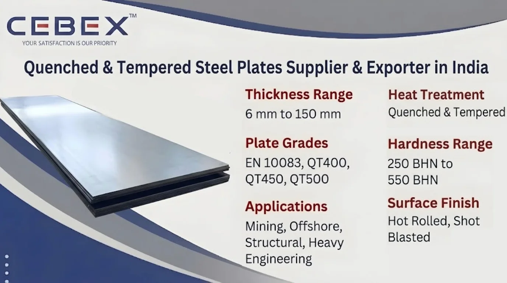

Leading Supplier & Exporter of High-Strength Q&T Steel Plates to 35+ Countries
Quenched & Tempered Steel Plates are high-strength alloy steel plates manufactured through specialized heat treatment processes involving quenching and tempering to achieve superior hardness, toughness, wear resistance, and mechanical strength. These steel plates are widely used in mining industries, heavy engineering, offshore platforms, pressure vessels, construction equipment, structural fabrication, defense applications, and industrial machinery because of their exceptional impact resistance, high tensile strength, and long operational life. As a leading Quenched & Tempered Steel Plates Supplier & Exporter in India, CEBEX STEEL INDIA supplies premium-quality Q&T steel plates manufactured according to international ASTM, EN, DIN, and ISO standards for demanding industrial applications.
Our Quenched & Tempered Steel Plates are extensively utilized in dump truck bodies, excavator components, cranes, offshore structures, heavy machinery, structural frameworks, earthmoving equipment, defense vehicles, pressure equipment, and wear-resistant industrial systems operating under high stress and abrasive conditions.
At CEBEX STEEL INDIA, we utilize advanced rolling, quenching, tempering, stress relieving, leveling, and precision cutting technologies to supply Quenched & Tempered Steel Plates with excellent dimensional accuracy, uniform hardness, and dependable metallurgical performance. Our products are trusted by EPC contractors, mining industries, heavy engineering companies, fabrication industries, offshore contractors, and industrial buyers across India, Africa, the Middle East, Europe, and Southeast Asia.

Selecting the right Quenched & Tempered Steel Plates supplier is essential for ensuring mechanical strength, impact resistance, dimensional precision, hardness consistency, and long-term operational reliability. CEBEX STEEL INDIA has established itself as a trusted Quenched & Tempered Steel Plates Supplier & Exporter in India through strong metallurgical expertise, strict quality control systems, and dependable worldwide export capabilities.
We maintain complete traceability from raw material procurement to finished plate dispatch and provide all materials with EN 10204 3.1/3.2 Mill Test Certificates, hardness reports, impact test reports, and export documentation. Our in-house quality department performs comprehensive inspection procedures including ultrasonic testing, hardness testing, tensile testing, impact testing, dimensional verification, and surface inspection to ensure compliance with ASTM and customer project specifications.
Our export logistics team efficiently manages seaworthy packaging, export documentation, and international shipping for smooth global deliveries.
Our Quenched & Tempered Steel Plates are manufactured using premium-quality alloy steel raw materials sourced from approved mills and processed through advanced heat treatment technologies to ensure exceptional strength, toughness, and wear resistance.
| Feature | Specification / Detail |
|---|---|
| Standards | ASTM, EN, DIN, ISO |
| Plate Grades | EN 10083, QT400, QT450, QT500 |
| Hardness Range | 250 BHN to 550 BHN |
| Thickness Range | 6 mm to 150 mm |
| Width Range | 1250 mm to 3500 mm |
| Length Range | Up to 12000 mm |
| Surface Finish | Hot Rolled, Shot Blasted |
| Heat Treatment | Quenched & Tempered |
| Applications | Mining, Offshore, Structural, Heavy Engineering |
| Documentation | EN 10204 3.1/3.2, MTC, Hardness Reports |
We supply a comprehensive range of Quenched & Tempered Steel Plates suitable for structural, wear-resistant, and heavy engineering applications. Our product range includes high-strength Q&T plates for heavy machinery, wear-resistant plates for mining and material handling systems, offshore structural plates, pressure-resistant alloy steel plates, and impact-resistant steel plates for construction and earthmoving equipment.
We also supply hardened structural steel plates, heavy-duty machine plates, crane boom plates, armored steel plates, custom fabricated wear components, and CNC-cut Q&T steel plates according to customer drawings and industrial project requirements.
Material selection plays a critical role in determining hardness, toughness, impact resistance, weldability, and service life. We supply Quenched & Tempered Steel Plates in internationally approved grades suitable for highly demanding industrial operating environments.
| Grade | Hardness | Typical Applications | Standards |
|---|---|---|---|
| QT400 | 360 – 440 BHN | General Structural Wear Applications | EN 10083 |
| QT450 | 425 – 475 BHN | Heavy Engineering & Mining | EN 10083 |
| QT500 | 470 – 530 BHN | Severe Wear Applications | EN 10083 |
| EN24 Q&T | High Strength | Shafts & Heavy Machinery | DIN / EN |
| A514 Steel Plate | Structural High Strength | Cranes & Offshore | ASTM |
All materials are sourced from reputed mills and supplied with complete traceability, inspection reports, and EN 10204 3.1/3.2 Mill Test Certificates.
Every Quenched & Tempered Steel Plate supplied by CEBEX STEEL INDIA includes complete chemical composition and mechanical property reports to ensure compliance with international standards and industrial project requirements.
| Element | Composition (%) |
|---|---|
| Carbon (C) | 0.20 Max |
| Manganese (Mn) | 1.60 Max |
| Silicon (Si) | 0.70 Max |
| Chromium (Cr) | 1.0 Max |
| Nickel (Ni) | 1.0 Max |
| Molybdenum (Mo) | 0.50 Max |
| Iron (Fe) | Balance |
| Property | Value |
|---|---|
| Hardness | 360 – 440 BHN |
| Tensile Strength | 1250 MPa Approx |
| Yield Strength | 1000 MPa Approx |
| Impact Toughness | Excellent |
| Element | Composition (%) |
|---|---|
| Carbon (C) | 0.30 Max |
| Manganese (Mn) | 1.70 Max |
| Chromium (Cr) | 1.5 Max |
| Nickel (Ni) | 1.0 Max |
| Molybdenum (Mo) | 0.60 Max |
| Iron (Fe) | Balance |
| Property | Value |
|---|---|
| Hardness | 470 – 530 BHN |
| Tensile Strength | 1600 MPa Approx |
| Yield Strength | 1300 MPa Approx |
| Impact Toughness | High |
Our quality department conducts hardness testing, ultrasonic testing, tensile testing, Charpy impact testing, dimensional inspection, and surface verification using calibrated inspection equipment.
Quenched & Tempered Steel Plates are processed through controlled quenching and tempering heat treatment procedures that significantly improve hardness, toughness, and mechanical performance. The quenching process rapidly cools the steel to increase hardness, while tempering reduces brittleness and enhances toughness for structural reliability.
These plates provide excellent resistance against impact loading, abrasive wear, deformation, and structural fatigue under highly demanding industrial operating conditions. Their superior strength-to-weight ratio makes them ideal for heavy engineering applications requiring long-term durability and reduced maintenance costs.
Our Quenched & Tempered Steel Plates are extensively used in industries requiring high strength, wear resistance, impact toughness, and structural durability. Mining industries utilize Q&T steel plates for dump truck bodies, excavator buckets, crushers, conveyor systems, and heavy material handling equipment operating under severe wear conditions.
Construction equipment manufacturers use quenched and tempered plates for cranes, bulldozers, loaders, and heavy structural machinery. Q&T steel plates are also widely used in offshore engineering, defense vehicles, pressure vessels, industrial fabrication, shipbuilding, steel plants, power generation facilities, and heavy engineering applications.
Quality assurance is one of the core strengths of our manufacturing and export operations. Every Quenched & Tempered Steel Plate undergoes strict inspection and testing procedures including hardness testing, ultrasonic testing, chemical analysis, tensile testing, Charpy impact testing, dimensional inspection, and visual surface inspection.
Our quality control department utilizes advanced inspection equipment including hardness testers, ultrasonic flaw detectors, spectrometers, tensile testing machines, impact testing machines, and dimensional measurement systems to ensure compliance with ASTM, EN, DIN, ISO, and customer project requirements.
We supply all products with EN 10204 3.1 Mill Test Certificates, EN 10204 3.2 certification, hardness reports, third-party inspection reports, and complete raw material traceability documentation.
We understand the importance of secure packaging and timely delivery for industrial and export projects. Our Quenched & Tempered Steel Plates are packed using export-grade wooden pallets, steel strapping, waterproof wrapping materials, and seaworthy packaging systems to ensure complete protection during transportation and storage.
Our export logistics department manages complete shipping documentation including commercial invoices, packing lists, certificates of origin, mill test certificates, hardness reports, and inspection reports for smooth customs clearance and worldwide shipping.
As a leading Quenched & Tempered Steel Plates Supplier & Exporter in India, we have built a strong reputation for supplying high-quality Q&T steel plates to major mining, offshore, heavy engineering, and infrastructure projects across Africa. Our export team understands the unique requirements of African industries and ensures smooth, timely deliveries with complete documentation, inspection compliance, and international export support. From mining operations and offshore structures to heavy machinery manufacturing, power plants, and industrial engineering systems, our Quenched & Tempered Steel Plates are trusted by clients in Nigeria, Egypt, Kenya, South Africa, Ethiopia, and beyond.
Clients choose CEBEX STEEL INDIA because of our strong technical expertise, strict quality control systems, competitive export pricing, and dependable worldwide delivery capabilities. We provide flexible order quantities, fast production schedules, CNC cutting services, technical support, and project-based supply solutions for industrial and EPC projects.
Our engineering team assists clients in selecting the appropriate quenched and tempered steel grades and specifications based on wear severity, impact conditions, hardness requirements, fabrication needs, and operational performance expectations.
Quenched & Tempered Steel Plates are used in mining equipment, offshore structures, heavy machinery, construction equipment, cranes, pressure systems, and industrial applications requiring high strength and wear resistance.
The quenching and tempering process improves hardness, tensile strength, impact resistance, and toughness while maintaining structural reliability under severe operating conditions.
Yes, Quenched & Tempered Steel Plates can be welded, machined, and fabricated using suitable industrial procedures and recommended welding consumables.
Yes, all Quenched & Tempered Steel Plates are supplied with hardness reports, EN 10204 3.1/3.2 Mill Test Certificates, and inspection documentation.
Mining industries, offshore engineering, heavy machinery manufacturing, construction equipment manufacturers, power plants, defense industries, and structural engineering companies extensively use Q&T steel plates.